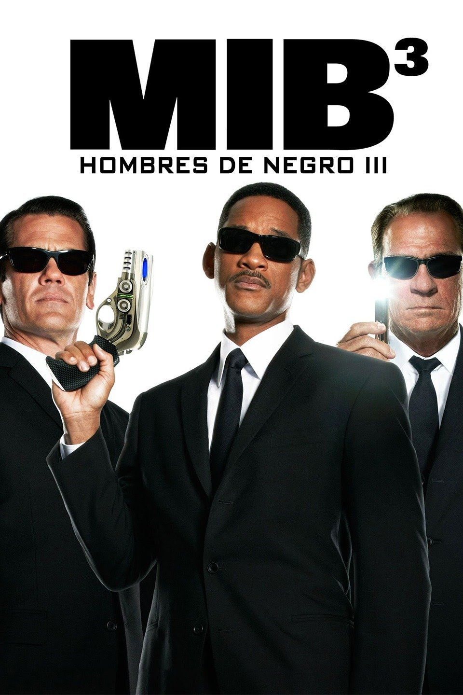

Tercera película
Tercera película("Men In Black 3")

Sinopsis
A pesar de que los agentes J y K han estado protegiendo la Tierra de la escoria alienígena por años, J sigue sin saber mucho acerca de su compañero. Sin embargo, tiene la oportunidad inesperada de conocer más a K cuando un criminal llamado Boris el Animal escapa, regresa al año 1969 y mata a K. Con el futuro del planeta en juego, J regresa en el tiempo y se une a un joven K para arreglar las cosas.
Fecha de estreno: 25 de mayo de 2012
Duración: 106 min
Música compuesta por: Danny Elfman
Guion: Etan Cohen, David Koepp, Jeff Nathanson, Michael Soccio
Dirección: Barry Sonnenfeld
| Intérpretes |
| Actores |
Personajes |
Actor de voz (Hispanoamérica) |
| Agente K |
Tommy Lee Jones |
Blas García |
| Agente J / James Darrell Edwards III |
Will Smith |
Juan Alfonso Carralero |
| Agente K(Joven) |
Josh Brolin |
Juan Antonio Bernal |
| Boris el animal |
Jemaine Clement |
Alfonso Vallés |
| Agente O |
Emma Thompson |
Mercedes Montlá |
| Griffin |
Michael Stuhlbarg |
Luis Posdada |
| Jeffrey Price |
Michael Chernus |
José Javier Serrano |
| Andy Warhol/Agente W |
Bill Hader |
Xavier Fernández |
| Agente X |
David Rashe |
Jaume Coma |
| Coronel Edward |
Mike Colter |
Eduard Farelo |
| Wu |
Keone Young |
Carles Canut |
| Fans de los New Yorks Mets |
Joseph R. Gannascoli |
Joaquín Gómez |
| Alien cabeza de bolo |
Lenny Venito |
Rafael Calvo |
| Agente O(Joven) |
Alice Eve |
Cristina Mauri |
| Agente AA |
Will Arnet |
Carlos Di Blasi |
| Guardia del MIB |
Woodie King JR. |
Manuel Ceinos |
| Guardia del MIB(1969) |
Jack(II)O'Connell |
César Lechiguero |
| Alienígena cerebro |
Rick Baker |
Gonzalo Abril |
| Policía 1 |
Desconocido |
Enric Isa Si-isa Smendi |
| Policía 2 |
Desconocido |
Joaquín Gómez |
Resumen
Mientras en la Tierra se celebra el funeral por el agente Z, cuyo cargo pasó a ocupar la agente O, Boris el Animal, el último superviviente de los bogloditas consigue escapar de la prisión lunar donde permanecía desde que 40 años antes lo detuviera el Agente K tras dejarle sin su brazo izquierdo.Una aparentemente inocente tarta de cumpleaños que incluía en su interior un diminuto pero potentísimo ser, ayuda a Boris a cortar sus cadenas, tras lo que se introduce en su cuerpo, consiguiendo deshacerse de sus carceleros, disponiéndose para regresar a la tierra y viajar en el tiempo hasta 1969 para poder recuperar su brazo y vengarse de K.La noticia de la huida y la llegada de un satélite a la Tierra alerta a los Hombres de Negro, que acuden a un restaurante chino regentado por extraterrestres y donde esperan que acuda el fugitivo en busca de su comida favorita.
En efecto Boris llega hasta allí, y tras un duro enfrentamiento consiguen escapar, aunque saben que desea acabar con K.
J trata de interrogar a K sobre el asunto, aunque este se niega a contarle nada, estando restringido el acceso a dicho expediente en la base de datos del MIB.
Solo consigue saber que los bogloditas arrasaban con todos los seres vivos de los lugares por donde pasaban y que K consiguió evitar que hicieran lo mismo con la Tierra consiguiendo desplegar en el año 1969 desde Cabo Cañaveral el ArcNet, una red de seguridad que protege al planeta del ataque boglodita, obligando a los invasores a continuar su periplo por el espacio, lo que supuso su extinción, al no tener suficientes víveres para llegar al siguiente planeta habitado.
Y de pronto todo cambia sin que J encuentre ninguna explicación.
Acude a casa de K, pero todo es diferente y no está allí, siendo recibido de regreso al cuartel por un hombre al que no conoce y que afirma que es el Agente Doble A, su compañero, descubriendo una vez dentro que nadie conoce a K.
Solo la Agente O lo recuerda y le muestra una escultura de K, muerto en 1969, dándose cuenta por la actitud y los síntomas de J, - que tiene deseos constantes de tomar chocolate caliente - de que se ha visto implicado en una fisura temporal.
Enseguida comprobará que esto es así, pues de pronto se anuncia la llegada de un ataque boglodita al no existir el ArcNet para evitarlo, lo que significa que Boris consiguió viajar en el tiempo 40 años atrás.
J acude a ver al mismo individuo que le facilitó a Boris el dispositivo para saltar en el tiempo, debiendo lanzarse desde un rascacielos hasta el 15 de julio de 1969, un día antes que Boris.
Una vez en el pasado acude al parque de atracciones donde sabe que Boris mató a otro extraterrestre, aunque no puede acabar con él, pues un joven K se lo impide, deteniéndolo y llevándolo hasta la sede de los MIB donde ve a la joven Agente O tonteando con K.
Una vez allí están a punto de neuralizarlo, aunque finalmente lo perdonará cuando le dice que va a morir, para escuchar lo que tiene que decirle.
Investigan juntos yendo hasta una fiesta donde descubre que Andy Warhol es un agente de los suyos, el agente W, y donde coinciden con Griffin, un arcaniano capaz de ver con antelación el futuro y que promete entregarles el ArcNet, aunque antes de entregárselo es raptado por Boris.
J y K los siguen y consiguen liberar a Griffin cuando Boris sufre un accidente del que sale con vida.
Irán con Griffin, que consiguió ocultar el ArcNet bajo su sombrero, hasta el Shea Stadium, donde les entrega el dispositivo, que, para poder ser colocado en el espacio debe ser desplegado en este, para lo que deberán aprovechar que está a punto de lanzarse al espacio el Apolo XI, para colocar en él el dispositivo.
Entretanto se reencuentran el nuevo Boris y el antiguo, que se reprochan mutuamente sus debilidades y fallos, uniendo sus fuerzas para lograr sus objetivos.
K y J deben partir hacia Cabo Cañaveral, y utilizarán unos potentes propulsores, que J sabe que no existen en el futuro, lo que le da por pensar que no son muy fiables, aunque es el único modo de llegar a tiempo a Florida.
Una vez allí deben acceder a la nave, aunque son detenidos por la policía militar, aunque solo podrán convencer al mando de estos cuando Griffin le muestra lo que ocurriría en el futuro si no les permiten subir hasta el cohete y colocar en su punta el ArcNet, cuando está a punto de llegar la cuenta atrás.
Pero allí están también los dos Boris, dispuestos a evitar que puedan cumplir su misión y deseosos de vengarse de K, por lo que tratan de evitar que llegue a su destino, enfrentándose J al Boris viejo y K al joven, como ya ocurrió en el pasado.
J consigue gracias al dispositivo que le ayudó a viajar en el tiempo volver un minuto atrás, sabiendo ya cómo fue el ataque de Boris, pudiendo de ese modo vencerlo lanzándolo al vacío.
Entretanto K debe enfrentarse al joven Boris, y al igual que en la anterior ocasión le vuela el brazo, consiguiendo colocar el ArcNet unos segundos antes de que la nave despegue, calcinando al viejo Boris.
Cuando regresa abajo le espera Boris, aunque en esta ocasión, en vez de arrestarlo acaba con él, aunque sin poder impedir que antes acabe con el Coronel.
J pudo observarlo todo, justo antes de partir de nuevo hacia el presente, viendo cómo un niño, James busca a su padre, que no es otro que el Coronel.
K lo consuela, y, tras neuralizarlo le da al niño un reloj de su padre y le dice que este fue un héroe y que él cuidará de él.
J, tras comprobar que el reloj del niño es el mismo que él tiene, se da cuenta de que ese es el motivo por el que no recuerda nada de su padre, aunque regresa feliz sabiendo que su padre murió como un héroe.
Por ello cuando vuelve a encontrarse con K en una cafetería él comprende que siempre estuvo velando por él, comprendiéndolo mucho mejor.
A su lado está Griffin, que dice que ese es su nuevo momento favorito en la historia, a menos que sea el día en que K olvida dar propina y cae un meteorito sobre la tierra.
Observamos que a K se le olvidó la propina, aunque en el último momento regresa y la deja.